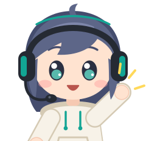

進行・ファン化
初見を追うな。「7回目も来たくなるLIVE体験」を、視聴者の時間で設計する
- 原本：再訪・初見・企画・ファン化・録画の正本より
初めて来た一人が、自分の意思でまた来るまで。来訪ごとに視聴者が知っていること・まだ知らないことを見て、「次も来て」より先に、次回の約束になる中身をつくる。
一人の視聴者の時間で見る
- 来訪前見つける
- 入室・会話いていい・話せる
- 帰宅何が残る？
- 次回来訪また来る理由
人数を追う前に、
一人がまた来る理由をつくる。
初見は来るのに、また来る人が増えない
こんなことで迷っていませんか。
- 初めての人は来るのに、次の配信には来ない
- 常連と盛り上がると、初めての人が置いていかれる
- 「次も来てね」と言っているのに、また来てくれない
足りないのは人数や告知ではなく、次に来る理由になる中身かもしれません。
架空の視聴者Aさんの1〜7回目を追いながら、来訪ごとに何を足せば「また来たい」が育つかを、視聴者の時間で考えます。
読み終えると、こんな状態へ
視聴者の時間軸で体験を1枚にまとめ、次の配信で「次回の約束」になる中身を1つ足せます。
たとえば、2週間ぶりに来た人がいた時。
- 「おかえり！ 前に話してたキャンプ、行けた？」と、来なかった理由は聞かずに迎える。
- 初めての人には「この枠の金曜の恒例でね」と一言説明する。
- 最後は「来週は今日決めたテーマで話すね」で締める。
お願いを増やさなくても、また来る理由が少しずつ積み重なっていく。
このページで進む道
- Aさんの7回
- 次回の約束
- 初見と内輪の両立
- 3つの失敗
- 体験マップ
攻略ノート
このコンテンツで学べること

一人の来訪を、時間で見る
架空のAさんの1〜7回目。知っていること・知らないこと・ハードル。
LIVEに効く理由人数ではなく、一人がまた来る理由が見えます。
だから来訪ごとに足すことが分かる
次回の約束になる中身
続き・恒例・再開・予告の4種類。
LIVEに効く理由「次も来て」だけのお願いを卒業できます。
だからまた来る理由をつくれる
初見と内輪の両立
通訳・常連の歓迎・役割・特権化しない。
LIVEに効く理由常連の楽しさを守りながら、入口を開けます。
だから誰でも居やすい場になる
3つの失敗と体験マップ
内輪化・変え過ぎ・告知過多と、1枚の設計図。
LIVEに効く理由翌週の配信で試すことが決まります。
だから体験を設計し続けられる
学んだ先に変わること
- 配信者がすること来訪ごとに、足す一言と仕掛けを選べる
- 視聴者久しぶりでも、初めてでも戻りやすい
- LIVE続き・恒例が、枠の文化になる
- その先また来る理由が、配信ごとに積み重なる
「人数」から「一人の時間」へ。
再訪やフォローの増加を保証するものではありません。
このページの最後に、来訪前→入室→会話→帰宅→次回来訪を、視聴者目線で1枚にします。
架空の視聴者Aさんの、1〜7回目
ここに出てくるAさんは、練習のための架空の視聴者です。7回も演習用のモデルで、「7回来ればファンになる」という決まりや目標ではありません。
架空の視聴者Aさんの、1〜7回目
何回目を見る？
押すと、その回のAさん（架空）と、配信者の選択肢が出ます。
1回目初見
（架空）夜、おすすめに流れてきた配信を、何となく開いた。コメントはせず、5分ほど見て閉じた。
- 視聴者が知っていること
- 配信者の顔と声。いま話していた話題の一部
- まだ知らないこと
- 名前・何の配信か・いつやっているか
- 参加のハードル
- 何の話か分からない。コメントしていいのかも分からない
配信者の選択肢（どれか一つでOK）
- 入ってきた時に「今、何をしているか」を一言（例：「今、昨日の失敗談の続きです」）
- 見るだけでも大歓迎、と伝える
- 画面やタイトルで、何の配信かが分かるようにする
確認する事実入室の表示が出た時、今の話を一言で言えていたか（録画で）
2回目再訪
（架空）次の週、同じくらいの時間に、また同じ配信が流れてきた。「この前の人だ」と思って開いた。
- 視聴者が知っていること
- 顔と声。だいたいこの時間にいること
- まだ知らないこと
- 名前の読み方・毎回何があるのか
- 参加のハードル
- まだ自分は知られていない。話しかけるきっかけが無い
配信者の選択肢（どれか一つでOK）
- 「この時間はいつもこの話から始めてます」と、いつもの流れを短く言う
- プロフィールと配信の最後で、次の配信の曜日と時間を伝える
- 前回の話の続きを、少しだけ話す
確認する事実配信の最後に、次の配信の日時を伝えられたか
3回目ROM・いいね
（架空）今日もコメントはしない。でも、共感した所でいいねを押した。
- 視聴者が知っていること
- 話し方の雰囲気・いつもの挨拶
- まだ知らないこと
- 自分のいいねが届いているか
- 参加のハードル
- 文章でコメントするのは、まだ気が引ける
配信者の選択肢（どれか一つでOK）
- いいねが増えたら「わかる、の合図届いてる」と言葉で返す
- いいねで答えられる問いを出す
- 「見てるだけの人も、ありがとう」と伝える
確認する事実いいねに、言葉で返した場面があったか
4回目初コメント
（架空）二択の質問が出たので、思い切って「B」と一文字だけ書いた。
- 視聴者が知っていること
- この配信の定番の流れ。質問に答えると拾ってもらえそう
- まだ知らないこと
- 名前を覚えてもらえるか
- 参加のハードル
- 拾ってもらえなかったら、と少し不安
配信者の選択肢（どれか一つでOK）
- 名前を呼んで「Bきた！ じゃあBからね」とすぐ使う
- 答えに一言だけ問いを返す
- 後の話でも、その人のコメントに触れる
確認する事実初めてのコメントを、話に使えたか（録画・コメント欄で）
5回目参加
（架空）毎週の「今週のひとこと発表」に、自分の一言を送った。読まれて、少し笑ってもらえた。
- 視聴者が知っていること
- 毎週の恒例があること。自分も参加できること
- まだ知らないこと
- 常連の内輪の話のいくつか
- 参加のハードル
- 内輪の合言葉が分からない時がある
配信者の選択肢（どれか一つでOK）
- 恒例を、初めての人にも一言で説明してから始める
- 参加してくれた人の一言を、場全体へ広げる
- 内輪の言葉は、その場で短く通訳する
確認する事実恒例を始める前に、初めての人への一言説明があったか
6回目しばらく来ない
（架空）仕事が忙しくなって、2週間見られなかった。
- 視聴者が知っていること
- 配信の時間と、恒例があること
- まだ知らないこと
- 見られなかった間に何があったか
- 参加のハードル
- 久しぶりに入ると、話についていけないかもしれない
配信者の選択肢（どれか一つでOK）
- 来られなかった人にも続きが分かるように、前回までを短く話す
- ストーリーなどで、名場面や結果を残しておく
- 来なかった人を責める言葉・来る義務を感じさせる言葉は使わない
確認する事実（来ていない人の気持ちは分からない）配信の冒頭で、前回までの流れを話せたか
7回目帰還
（架空）久しぶりに入ったら、名前を呼ばれて「おかえり」と言われた。話していたことの続きも聞けた。
- 視聴者が知っていること
- この配信の流れ・恒例・自分の居場所があること
- まだ知らないこと
- （特になし。でも気持ちは人それぞれ）
- 参加のハードル
- 特に無い。ただ、来なかった理由を聞かれたら少し困る
配信者の選択肢（どれか一つでOK）
- 「おかえり」と言い、来なかった理由は聞かない
- 前に聞いた話の続きを、1つだけ聞く
- 初めての人もいる時は、その人の話を場全体に開く
確認する事実帰ってきた人を迎える時、初めての人を置いていかなかったか
7回はあくまで練習のための架空のモデルです。7回来ればファンになる、という決まりでも目標でもありません。Aさんの気持ちは作った物語で、実際の視聴者の気持ちは画面からは分かりません。「確認する事実」は、録画やコメント欄で自分が確かめられることだけにしています。
ここが要点
同じ配信の中には、初めての人・2回目の人・常連・しばらくぶりの人が一緒にいます。誰が何回目かは画面からは分からないので、一人ひとりを分類せず、どの人がいても居やすい言葉を場面ごとに選びます。
Aさんがまた来た理由の多くは、次回の約束になる中身でした。
「次も来て」より先に、次回の約束になる中身を
BEFORE
お願いだけ
- 「次も来てね！」
AFTER
次回の約束になる中身
- 「今日の続き、来週の最初に結果を発表するね。木曜21時から！」
約束の中身ができたら、初めての人と常連の両方が居やすい場を考えます。
初めての人の入口と、常連の内輪ノリを両立する
注意
常連に「初めての人が来たら必ず挨拶して」とお願いすると、義務になって疲れてしまいます。歓迎は「できる人が、気が向いた時だけ」。歓迎していない常連を責めません。
うまくいかない時の、よくある3つの失敗を見ておきます。
よくある3つの失敗：内輪化・変え過ぎ・告知過多
1分練習：話題を「次回の約束」に変える
- 最近の配信で話した話題を1つ思い出す
- それを「次回の約束」にする一言を作る（続き・恒例・再開・予告のどれか）
- 声に出して言ってみる。「次も来てね」だけになっていないか確かめる
最後に、自分の配信の体験マップを作ります。
MY VISIT MAP｜視聴者目線の体験マップを1枚に
自分の配信を、初めて来る一人の視聴者の目線で順にたどります。再訪率などの数字が取れない時は、推測で埋めずに「未計測」と書きます。
ワークショップ
MY VISIT MAP
書けたところまでで大丈夫です。このブラウザの中だけに保存されます。
来訪前
入室
会話
帰宅
次回来訪
MY VISIT MAP
- 来訪前
- 入室
- 会話
- 帰宅
- 次回の約束
- 確かめること
書いた内容は、このブラウザの中だけに保存されます
重なる所は、こちらの教材で詳しく。

「前回の選択を覚えていた」は、名前を呼ぶより強いことがある開く
名前を呼ぶだけでなく、前に聞いたことを覚えていて次に拾うと、また来た意味が生まれやすくなります。
BEFORE
名前だけ
- 「〇〇さん、こんばんは！」
AFTER
前回を覚えていた
- 「〇〇さん、前におすすめしてくれたお菓子、食べたよ！」
終演は、翌日と1週間まで続く開く
配信が終わってからも、名場面と続きを残せば、思い出して戻る理由になります。
当日の終わり
今日の名場面と次回の中身
翌日
ストーリーで結果と感謝
1週間以内
配信で「この前のあれ」を話す
ファン化・応援につながる理由
見つける → いていい → 話せた → 続きがある → また来る
一回一回の体験に、次に来る理由が少しずつ足されていくと、自分の意思でまた来る人が育っていきます。
「この流れを作れば必ず再訪が増える」という話ではありません。
- 見つける
- いていい
- 話せた
- 続きがある
- また来る
7回目も来たくなる体験で覚える4つ
初見を追う前に、一人の視聴者の時間で体験を見る
「次も来て」より先に、次回の約束になる中身を足す
初めての人の入口と、常連の内輪ノリを両立する
再訪率が取れない時は、推測で埋めずに未計測と書く

次の配信で試すこと
できた数 0 / 4
全部試せました。下の「できた目安」を確かめましょう。
できた目安
「MY VISIT MAP」で、入室から次回の約束までが書けていたらOK。
もう一歩次の配信で、次回の約束になる中身を1つ足した。
さらに上約束した続きを、次の配信の最初で回収した。
その先続き・恒例・再開・予告を組み合わせて、また来る理由を積み重ねている。
配信のあとに見ること
見えたことだけで確かめます。
次は？